| J-Domain, JDraw Help |
JDraw is a pixel oriented graphics editor and easy to use. This document
will help you to find your way around.
The following sections explain JDraw's various features:
JDraw can read the following formats:
Images can be saved in the following formats:
In JDraw a picture can consist
of any number of frames. A picture is associated with a global
palette of colours. Frames can either use this global or their
own local palette.
Multiple frames can only be saved as GIFs or ICOs. When saving as PNG,
only the current frame is considered.
| 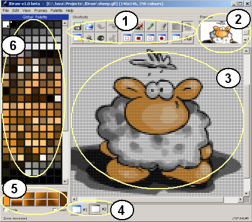 JDraw's Main Screen Sections |
The picture above enumerates the main screen sections of JDraw.
The colour palette displays the colours that the current frame uses - named "main palette" - and the current gradient filling form - named "gradient palette". While the main palette always relates to the current frame, the gradient settings are global and don't change, when a different frame is selected. The next two sections describe the two palettes.
3.1 - The Main Palette TopThe main palette is either the picture's global palette or a local one, that is only used by a subset of the picture's frames. The blue title bar reflects the palette's visibility. You can click this bar to open the menu bar's palette menu as a context menu.
Each colour in a palette is represented by a small box filled in the corresponding colour. Such a palette entry can have the following decorations:
| 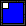 | A tiny white box in the upper left corner means the colour is the
current foreground colour. It's associated with the left mouse button
when drawing. To select the current foreground colour, left-click on a palette entry. |
| 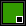 | A tiny black box in the lower right corner means the colour is the
current background colour. It's associated with the right (or middle) mouse
button when drawing. To select the current background colour, right-click on a palette entry. |
| 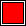 | A white rectangle around the box means the colour is the frame's
background. This colour shines through transparent pixels, if "Colour" is
selected as the transparency representation (see the
corresponding menu item). To select the frame's background colour, left-click on a palette entry while pressing the Ctrl-key. |
| 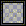 | If the box is completely filled with a pattern of tiny gray tiles the
colour is the frame's transparent colour. To select the transparent colour, right-click on a palette entry while pressing the Ctrl-key. |
| 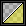 | A colour that's not fully opaque is represented by two triangles. The upper left triangle is the transparent pattern, the lower triangle shows the colour itself. |
Edit a colour To edit a colour's RGB and alpha values double-click a palette entry. This opens the colour editor dialog which - hopefully - is self-explanatory.
3.2 - The Gradient Palette Top"Gradient fill" means to smoothly change from one colour to another. The gradient palette let's you choose these two colours and set the direction of the colour change.
The two boxes to the right and left of the gradient palette represent the two colours that define the gradient fill. Double-click them to modify their RGB and alpha values. Select one of the boxes between the two gradient colours to specify the direction of the gradient fill. From left to right and row by row these can be the following:
The "Cycle" check box affects the fill patterns in the second row. After reaching the middle, the colour change is repeated back to the starting colour. The "Invert" check box applies to all patterns and swaps the two selected colours with each other. |
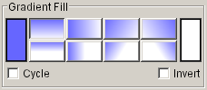 |
| File Menu | |
| New | Creates a new 32x32 picture using the default palette. |
| Open... | |
| Save | |
| Save as... | Asks for a file name and saves the picture. |
| Save compressed | Compresses the picture before it's saved. (see the corresponding menu item) |
| Edit Menu | |
| Undo | |
| Redo | |
| Resize... | Asks for the new dimension and resizes the picture (without scaling it). |
| Crop Image | Crops the image to the currently selected clip (see tools section). |
| Scale Image... | Asks for the new dimension and scales the picture. You can choose between smooth, average and fast scaling. Scaling can increase the size of your palette. |
| Compress | |
| Reduce to 255 colours | Combines similar colours until all frames of this picture use maximally 255 colours. |
| Reset Alpha Values | Replaces all (semi-)transparent colours with their opaque equivalent. |
| View Menu | |
| Increase Zoom | Increases the current grid size by 1. |
| Decrease Zoom | Decreases the current grid size by 1. |
| Set previous Zoom | Sets the previous grid size. |
| Maximum Zoom | Sets the maximum grid size (25x25 pixels) |
| Minimum Zoom | Sets the minimum grid size (1x1 pixels, displays the picture in its original size) |
| Hide Grid/Show Grid | Shows or hides the grid lines. |
| Hide Views/Show Views | Shows or hides the palette and tool panels. |
| Transparency as Colour/as Pattern | |
| View Animation... | |
| Frames Menu | |
| Add Frame | |
| Remove Frame | |
| Settings... | Opens the "Frame Settings" dialog. See section 6. |
| Insert Image... | Asks for a file name, reads the corresponding image and pastes it into the current frame. |
| Palette Menu | |
| Create/Discard Local Palette | Either creates a local palette for the current frame or discards it to use the picture's global palette. |
| Add Colour | Adds a new colour to the frame's palette. |
| Swap Colours | Replaces all pixels in the current foreground colour with the background colour and vice versa. |
| Remove Colour | Removes the current foreground colour from the frame's palette. All pixels in this colour are replaced with the palette's first colour (#0). |
| Sort Colours | Sorts the palette by the colours' HSB values (HSB=hue, saturation, brightness). |
| Remove unused colours | Removes all unused colours in the current palette. All frames using this palette are considered. |
| Reduce to 255 colours | Combines similar colours until the current palette uses maximally 255 colours. All frames using this palette are considered. |
| Reset Alpha Values | Replaces all (semi-)transparent colours in the current palette with their opaque aquivalent. All frames using this palette are considered. |
| Help Menu | |
| About... | Displays JDraw's About dialog to tell you about Source Forge and J-Domain. |
| Help... | Displays this document as online help. |
The tool bar consists of menu shortcuts and tool buttons. The following two sections explain these elements.
5.1 Menu Shortcuts Top| 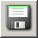 | Shortcut to the Save menu item. |
| Shortcut to the Open menu item. | |
| Shortcut to the Undo menu item. | |
| Shortcut to the Redo menu item. | |
| Shortcut to the Add Frame menu item. | |
| 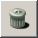 | Shortcut to the Remove Frame menu item. |
| 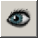 | Shortcut to the View Animation menu item. |
| Shortcut to the Crop menu item. |
Note - Initially JDraw was designed to support GIF pictures only. GIF allows only one transparent colour and no semi-transparency. The various tools may have strange effects when you work with many (semi-)transparent colours.
The pixel tool let's you draw single pixels. Click and drag the mouse over the draw panel to set pixels. Pressing the left mouse button sets pixels in the current foreground colour, the right mouse button sets the background colour. |
|
The fill tool fills an enclosed image area with the foreground colour (left-click) or the background colour (right-click). |
|
| 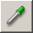 | The colour picker selects a colour when you click on a pixel in the drawing panel. Left-clicking sets the foreground colour, right-clicking the background colour. |
The line tool draws lines. Click into the drawing panel and drag the mouse to the line's end point. Doing this using the left mouse button draws the line in the foreground colour, the right mouse button uses the background colour. The line tool supports antialiasing. |
|
The rectangle tool draws rectangles. Click and drag to specify the rectangle's dimension. Again the left mouse button uses the foreground, the right button the background colour. |
|
The filled rectangle tool draws either solid or gradient filled rectangles. In solid filling the left mouse button uses the foreground, the right button the background colour. The filled rectangle tool supports gradient filling. |
|
The oval tool draws ovals. Click and drag to specify the oval's dimension. Again the left mouse button uses the foreground, the right button the background colour. |
|
The filled oval tool draws either solid or gradient filled ovals. In solid filling the left mouse button uses the foreground, the right button the background colour. The filled oval tool supports antialiasing and gradient filling. |
|
The clip tool let's you copy and move portions of an image within a frame or between
different frames. Click and drag to specify the clip's dimension. When releasing the mouse button the
selected clip is represented by a red-white rectangle. | |
| 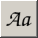 | The text tool let's you place text into your image. When clicking on the text tool, a
font dialog is displayed, that - hopefully - is self-explanatory. After selecting a font, a clip
containing your text is displayed within the current frame. You can move it around by clicking
inside and dragging. To paste the clip into the image, double-click within the clip.
To create a new text clip, just click the text tool again. |
| 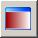 | |
| 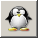 | The Antialias toggle button enables or disables the antialias mode. It can only be selected (deselected), if a tool supporting antialias is active. "Antialiasing" means that lines and curves are smoothed by setting extra pixels that reduce the contrast between back- and foreground. When selected, the penguin looks even cuter and the current tool draws in antialias mode, which might enlarge the frame's palette. |
The frame settings dialog let's you copy or remove frames, reorder them and specify how they are displayed in an animated GIF.
Copy a frame - To copy a frame, select it it in the frame list and either click the
Copy button or press Ctrl+C. You can also copy it by drag and drop while pressing the Ctrl key.
The frame's copy will share its palette. This means that palettes are never duplicated.
Paste a frame - You can paste a previously copied frame by pressing the Paste button or pressing Ctrl+V.
Remove a frame - Select the frame you want to remove in the frame list and press the Remove button.
Move a frame - Drag and drop the frame within the frame list.
Animation settings - For each frame you can specify how its previous frame is treated ("Disposal method") and for how long the frame is displayed, before the next animation frame is selected ("Time delay in 1/100 seconds").
Icon settings - Window's .ico files can store multiple images that can vary in their dimensions. JDraw only knows one dimension: the picture's size. If you want to have an icon with a different size than the pictures', enter its dimension in the "Icon width" and "Icon height" fields of the corresponding frame.
Commiting changes - Your changes are applied to the picture whenever you press the OK or Apply buttons.
Cancelling changes - You can cancel your changes up to the moment when you last pressed the Apply button.
| General Functions | |
| Cancel Dialog/Activate Pixel Tool | Pressing the escape key cancels an active dialog if one is present. Else the pixel tool is selected. |
| Main Palette Functions | |
| Select foreground colour | Left-click palette entry |
| Select background colour | Right-click palette entry |
| Select frame's background colour | Ctrl+Left-click palette entry |
| Select frame's transparent colour | Ctrl+Right-click palette entry |
| Edit colour | Double-click palette entry |
| Gradient Palette Functions | |
| Select fill colours | Double-click left or right colour. |
| Menu Shortcuts | |
| Open... | Ctrl+O |
| Save | Ctrl+S |
| Save as... | Ctrl+A |
| Undo | Ctrl+Z |
| Redo | Ctrl+Y |
| Resize... | Ctrl+R |
| Compress | Ctrl+K |
| Increase Zoom | + (plus) |
| Decrease Zoom | - (minus) |
| Previous Zoom | 8 |
| Maximum Zoom | 9 |
| Minimum Zoom | 0 |
| Hide/Show Grid | Ctrl+G |
| Hide/Show Views | H |
| Transparency as Colour/Pattern | Space |
| View Animation | Ctrl+V |
| Frame Settings | Ctrl+E |
| Help | Ctrl+H |
We hope you enjoy working with JDraw. Please report bugs and tell us about ideas for new features!
| Contact us! | jdomain@users.sourceforge.net jdraw@jdomain.de |